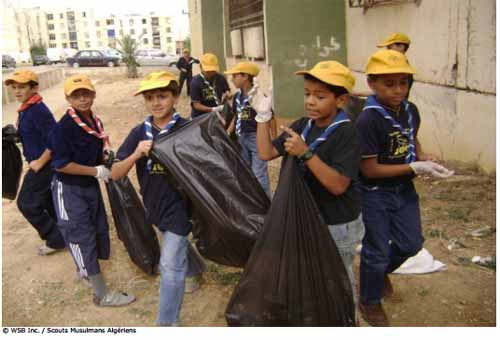

El reto de la bolsa de basura

Finalidad 4
Scouts trabajan por un mundo donde se implementan las prácticas ambientales más apropiadas.
Objetivos educativos: Reconocer cómo estamos conectados con el ambiente y cómo tomar decisiones informadas sobre nuestras acciones de tal manera que podamos minimizar el impacto en el ambiente. Identificar mejores prácticas ambientales en tu comunidad. Demostrar cómo soluciones locales pueden impactar temas globales.Edad: Tropa
Resumen: Un juego divertido para pensar sobre residuos y cómo se pueden reducir.
Objetivo: Motivar a pensar sobre los residuos que generamos, lo que puede reciclarse y cómo reducir lo que desechamos.
Materiales y equipo: Bolsas plásticas, selección de residuos (limpios y seguros)
Preparación: Prepare los residuos
Duración: Treinta minutos
Lugar: Lugar de reunión
Antecedentes: La sociedad humana genera muchos residuos. Estos residuos podrían ir a un relleno sanitario, ser incinerados o simplemente tirados a un botadero al aire libre y dejarse deteriorar. Lo que le pasa a estos residuos causa un problema para el ambiente. Necesitamos reducir la cantidad de residuos que producimos.
Esto se puede hacer al seguir el procedimiento de las cinco ‘Rs’:
Rechazar – por ejemplo, empaques innecesarios, volantes, materiales promocionales, bolsas plásticasReparar – ropa, equipo eléctrico, etc.
Reducir – elegir productos que tienen menos empaque, utilizar solo lo que necesitamos
Reusar – comprar productos de segunda mano, donar a tiendas de productos de segunda mano
Reciclar – comprar productos que se puedan reciclar y reciclarlos
Guía paso a paso de la actividad
1. Divida al grupo en equipos y deles a cada equipo una bolsa de basura.2. Explíqueles que el objetivo del juego es disminuir el contenido de la bolsa de basura tanto como sea posible en un periodo determinado de tiempo.
Esto se puede hacer al separar los residuos y decidir cómo disponer de ellos de forma diferente. Pida al grupo que piensen lo que podrían hacer para reducir el contenido de la bolsa de basura.
3. Después de cinco minutos pida a cada equipo que explique por qué removieron ciertos objetos de sus bolsas y dónde los van a poner si nolos ponen en la basura.
Ellos deberán explicar también qué harían de forma diferente; deberían identificar que algunas cosas pudieron rechazarse y que podrían comprar cosas con menos empaques o empaques que son reutilizables o reciclables.
4. El equipo ganador es el que tenga la bolsa de basura más pequeña al final.
Evaluación
1. Discuta la actividad e introduzca las cinco ‘Rs’ de los residuos. ¿Qué piensan los Scout sobre estas ideas? ¿Qué hacen ellos en la actualidad? ¿Qué sería factible hacer?
Actividades avanzadas
1. Pida a los Scout que piensen en los empaques y que traigan productos de la casa que muestran empaques que son buenos y malos para el ambiente. Ellos deberían pensar si el empaque es realmente necesario, si es reciclable, si ya es reciclado, cuánta manufactura requieren y cuánto tiempo tomará degradarse en un relleno sanitario.
2. Implementen un centro de reciclaje en su lugar de reunión. Pregunte a los Scout si ellos reciclan en casa.
3. Si no existen centros de reciclaje o de tratamiento de residuos, considere contactar al gobierno para motivarlo a que los implemente.
4. Escriba una política de manejo de residuos para su campo Scout. Piensen cómo pueden reducir la cantidad de residuos generados y cómo reutilizar y reciclar durante el campamento.
© World Scout Bureau
Rue du Pré-Jérôme 5
PO Box 91
1211 Geneva 4 Plainpalais
Switzerland
Tel.: (+ 41 22) 705 10 10
Fax: (+ 41 22) 705 10 20
worldbureau@scout.org
scout.org
Reproduction is authorized to National Scout
Organizations and Associations which are
members of the World Organization of the Scout
Rue du Pré-Jérôme 5
PO Box 91
1211 Geneva 4 Plainpalais
Switzerland
Tel.: (+ 41 22) 705 10 10
Fax: (+ 41 22) 705 10 20
worldbureau@scout.org
scout.org
Reproduction is authorized to National Scout
Organizations and Associations which are
members of the World Organization of the Scout